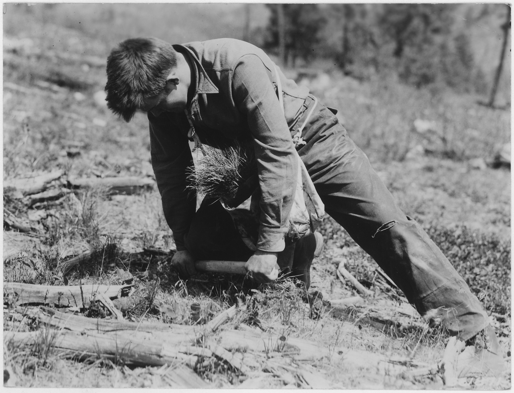

Directions: Your group is a relief office staff in 1933 to 1934. At each station your group receives one case file of an American who needs help. Match the case to the agency built for it, state exactly what that agency would provide, and record who no agency reaches and why. Work through the five stations in order, then complete the reach record in Part 2.
Source: Case file prepared for this lesson from CCC enrollment records and camp reports held by the National Archives. It is a teaching summary of a common case type, not one named person's file.
Thomas is nineteen, unmarried, and out of work for a year in a small Ohio city. His father lost his factory job in 1932 and the family of six lives on a small state relief grocery order. Thomas is healthy, can do heavy outdoor work, and wants to send money home. He has no trade and no way to leave town on his own.

Which agency was built for this case? Name it in full and state the two facts in the file that fit its rules.
State exactly what the agency would provide to Thomas and to his family, with the dollar figures from the reading.
Source: Case file prepared for this lesson from state relief practice under the Federal Emergency Relief Administration. It is a teaching summary of a common case type.
Mary is thirty four, widowed in 1932, with three children under ten in Chicago. She took in sewing until her eyes failed at close work. The family owes two months of rent and has no food beyond the week. She cannot leave her children for a camp or a construction site, and the city relief office has a waiting list.
Which agency was built for this case? Name it in full and state whether its help is direct relief or work relief.
State exactly what the agency would provide, through whom the help would arrive, and one limit on that help stated in the reading.
Source: Case file prepared for this lesson from relief and farm records of the southern Plains in 1933 and 1934. It is a teaching summary of a common case type.
James farms forty acres in western Oklahoma. Drought cut his wheat to almost nothing in 1933 and his family has eaten into its seed and sold its mule. He is forty eight, married, with four children. He will not leave the land. No camp will take a man his age with a family, and there is no construction project near his county this year.
Work through the five agencies of the lesson. State which agency, if any, reaches this family in 1933 to 1934, and through what kind of help.
State who in this file no agency of the lesson reaches well, and why. Use the age, family, and place facts in the file.
Source: Case file prepared for this lesson from Civil Works Administration employment records of the winter of 1933 to 1934. It is a teaching summary of a common case type.
Ruth taught elementary school in Mississippi until her district cut its term and its staff in 1933. She is twenty nine, single, trained for classroom work, and without income since the summer. She can supervise children, keep records, and type. The winter is coming, and she needs wages before spring, not camp work and not heavy construction.
Which agency was built for this case in the winter of 1933 to 1934? Name it in full and state the facts in the file that fit it.
State exactly what the agency would provide, for how long, and what happens to Ruth when the program ends, from the reading.
Source: Case file prepared for this lesson from Public Works Administration project records. It is a teaching summary of a common case type.
Walter is a civil engineer in Oregon, forty one, with a wife and two children. He designed bridges for a private firm until its work stopped in 1931. He has been idle for two years on short jobs. He wants work in his own trade on a project that will stand. He does not need a grocery order. He needs a salary, and he can wait months for the right project to start.
Which agency was built for this case? Name it in full and state who would actually employ Walter, from the reading.
State exactly what the agency would provide, why it arrives slowly in his case, and what his family gains that a winter job would not give.
Your group has matched five Americans to the agencies built for them. Now record the reach honestly, as the reading does. Complete the record below from your station work, then write the closing judgment.
| Case | Agency matched | Direct or work relief |
|---|---|---|
| 1. Jobless young man, Ohio | ||
| 2. Widowed mother, Chicago | ||
| 3. Drought farmer, Oklahoma | ||
| 4. Laid off teacher, Mississippi | ||
| 5. Construction engineer, Oregon |
In a short paragraph, judge how far the agencies' help reached in 1933 to 1934. Name the case your agencies reached best, the case they reached worst, and the gap in the system that the worst case exposes. Support each judgment with a fact from the case file and the reading.
Which agency, and what fits? The Civilian Conservation Corps. Thomas is a young unmarried man, healthy and able to do outdoor work, the exact enrollment the corps was built for.
What would it provide? Camp work planting trees, fighting fires, and building park roads and trails, with food, housing, and thirty dollars a month, of which twenty five dollars went straight home to his family. The family therefore gains a monthly check, and Thomas gains work and discipline, which is why the reading calls the corps relief twice over.
Which agency, and what kind of help? The Federal Emergency Relief Administration, led by Harry Hopkins. Its help is direct relief, money, food, or goods given without work required in return.
What would it provide, and its limit? Federal relief money sent through the state and the city relief office as grocery orders, rent help, and cash, decided family by family. The limit is evenness. State standards differed widely, so the same need drew generous help in one state and very little in another, and payments often differed by race within a state.
Which agency reaches this family? Only FERA direct relief reaches the family as this lesson's agencies are drawn, through state relief. The CCC takes young unmarried men, not a forty eight year old father. The CWA hired for one winter where projects existed. The PWA builds where large projects are funded. The farm programs of Lesson 3, above all the Agricultural Adjustment Act, are the fuller answer, and students should name that boundary.
Who is reached worst, and why? James himself. His age, his family, and his refusal to leave the land close every work relief door the lesson offers, and the drought that ruined his crop is a farm crisis that relief agencies were not built to cure.
Which agency, and what fits? The Civil Works Administration. Ruth needs wages for the winter of 1933 to 1934 in work she is trained for, and the CWA hired about four million people that winter, including office, classroom, and project staff work alongside labor on small public projects.
What would it provide, and for how long? A paid winter job. The reading is plain about the ending. Roosevelt shut the CWA down in the spring of 1934 over its cost, and stopping it threw its workers back onto direct relief. Ruth's case is the clearest classroom example of work relief that works and then stops.
Which agency, and who employs him? The Public Works Administration, led by Harold Ickes. Walter would be employed by a private contractor, not by the government directly, because the PWA funded large projects built by private contractors who hired the workers.
What would it provide, and why slowly? Work in his own trade on a dam, bridge, school, or courthouse project. It arrives slowly because Ickes insisted on careful review and honest bidding before releasing money. What his family gains is a lasting structure and steadier skilled employment, against the speed of a CWA winter job that left little standing.
The completed table should read: Case 1, Civilian Conservation Corps, work relief. Case 2, Federal Emergency Relief Administration, direct relief. Case 3, FERA direct relief only, with the farm programs of Lesson 3 named as the fuller answer. Case 4, Civil Works Administration, work relief. Case 5, Public Works Administration, work relief through private contractors.
Full credit for the paragraph should be awarded if the student: